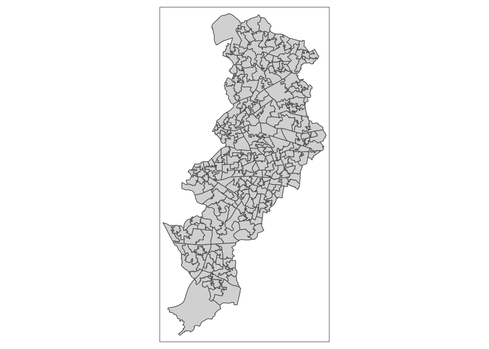
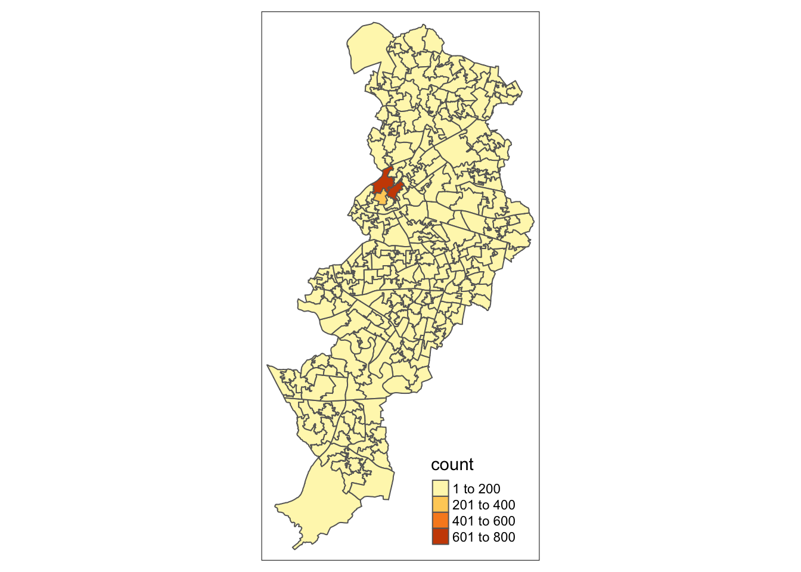
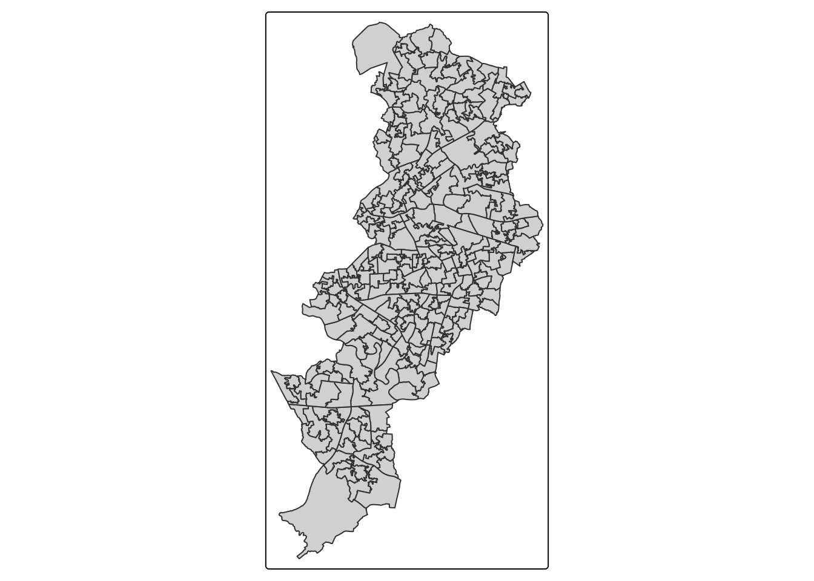
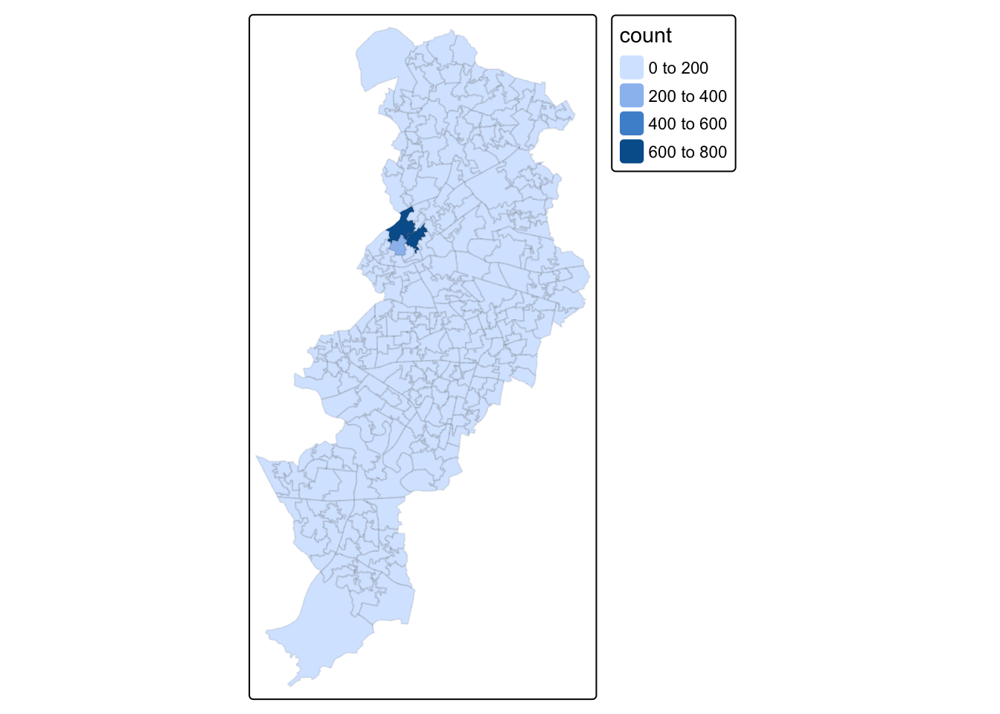
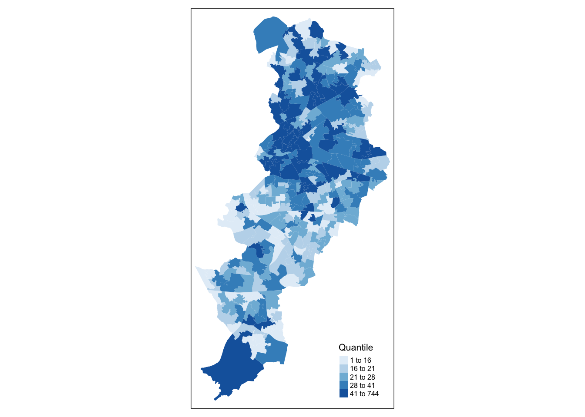
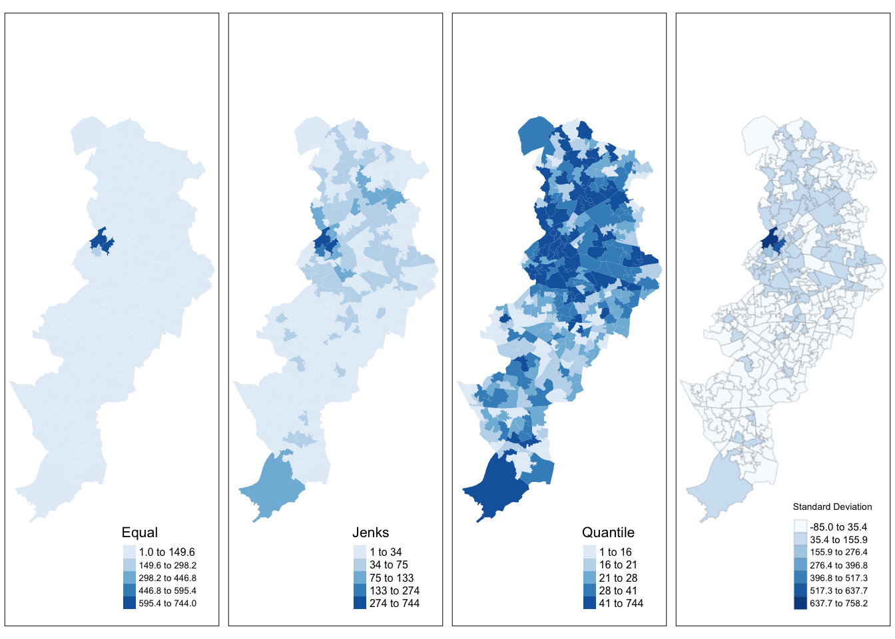

Chapter 3 Thematic maps in R
3.1 Intro and recap
Last week we showed you fairly quickly how to create maps by understanding how data may have spatial elements, and how that can be linked to geometries.
This week we will get to know how to think about thematic maps, and how to apply your learning to creating your own maps of this variety. In our lecture videos this week we discuss in detail issues with choropleth maps. So the focus of today’s lab is going to be around thematic maps and some of the choices we discussed.
We will also introduce faceting and small multiples, which is a format for comparing the geographical distribution of different social phenomena. For this session we will be using the spatial object that you created last week and complement it with additional information from the census. So first of all you will have to rerun the code you used to create the manchester_lsoa sf object. Apart from doing so, you want to start your session loading the libraries you know for sure you will need:
library(readr)
library(sf)
library(janitor)
library(tmap)
library(dplyr)You may not remember all of what you did to generate that file so let’s not waste time and just cut and paste from below (but try to remember what each of the lines of code is doing and if you are not clear look at the notes from last week). Imagine you had to do all of this again by pointing and clicking in a graphical user interface rather than just sending the code to the console! As you will see time and time again, code in the end is a much more efficient way of talking to a computer.
crimes <- read_csv("data/2019-06-greater-manchester-street.csv")
#The following assumes you have a subdirectory called BoundaryData in your data folder, if not then you will need to change to the pathfile where you store your LSOA shapefile
shp_name <- "data/BoundaryData/england_lsoa_2011.shp"
manchester_lsoa <- st_read(shp_name)## Reading layer `england_lsoa_2011' from data source `/Users/reka/Desktop/crime_mapping_textbook/data/BoundaryData/england_lsoa_2011.shp' using driver `ESRI Shapefile'
## Simple feature collection with 282 features and 3 fields
## geometry type: POLYGON
## dimension: XY
## bbox: xmin: 378833.2 ymin: 382620.6 xmax: 390350.2 ymax: 405357.1
## projected CRS: OSGB 1936 / British National Gridcrimes_per_lsoa <- crimes %>%
clean_names() %>%
select(lsoa_code) %>%
group_by(lsoa_code) %>%
summarise(count=n())
manchester_lsoa <- left_join(manchester_lsoa, crimes_per_lsoa, by = c("code"="lsoa_code"))You may not want to have to go through this process all the time. One thing you could do is to save the manchester_lsoa object as a physical file in your machine. You can use the st_write() function from the sf package to do this. If we want to write into a shapefile format we would do as shown below:
st_write(manchester_lsoa, "data/BoundaryData/manchester_crime_lsoa.shp")Notice how four files have appeared in your working directory, in your “BoundaryData”" subdirectory or whatever you called it. Remember what we said last week about shapefiles, there are a collection of files that need to be kept together.
If you wanted to bring this shapefile back into R at any future point, you would only need to use the st_read() function.
manchester_crime_lsoa <- st_read("data/BoundaryData/manchester_crime_lsoa.shp")## Reading layer `manchester_crime_lsoa' from data source `/Users/reka/Desktop/crime_mapping_textbook/data/BoundaryData/manchester_crime_lsoa.shp' using driver `ESRI Shapefile'
## Simple feature collection with 282 features and 4 fields
## geometry type: POLYGON
## dimension: XY
## bbox: xmin: 378833.2 ymin: 382620.6 xmax: 390350.2 ymax: 405357.1
## projected CRS: Transverse_Mercator3.1.0.1 Activity 1: Spot the difference
Before we carry on, can you tell what is different between manchester_lsoa.shp and manchester_crime_lsoa.shp that you now have saved for working with? Discuss in your groups, and write your thoughts on the shared google doc.
3.2 Creating thematic maps
Today we are going to introduce the tmap package. This package was developed to easily produce thematic maps. It is inspired by the ggplot2 package and the layered grammar of graphics. It was written by Martjin Tennekes a Dutch data scientist. There are a number of vignettes in the CRAN repository and the GitHub repo for this package that you can explore. GitHub is a collaborative website used by software developers and data scientist, also contains a useful readme section with additional resources to familiarise yourself with this package. Each map can be plotted as a static map (plot mode) and shown interactively (view mode) as we briefly saw last week. We will start by focusing on static maps.
Every time you use this package you will need a line of code that specifies the spatial object you will be using. Although originally developed to handle sp objects only, it now also has support for sf objects. For specifying the spatial object we use the tm_shape() function and inside we specify the name of the spatial object we are using. On its own, this will do nothing apparent. No map will be created. We need to add additional functions to specify what we are doing with that spatial object. If you try to run this line on its own, you’ll get an error telling you you must “Specify at least one layer after each tm_shape.”
tm_shape(manchester_crime_lsoa)The main plotting method consists of elements that we can add. The first element is the tm_shape() function specifying the spatial object, and then we can add a series of elements specifying layers in the visualisation. They can include polygons, symbols, polylines, raster, and text labels as base layers. We will add a polygon using tm_polygon(). As noted, with tmap you can produce both static and interactive maps. The interactive maps rely on leaflet. You can control whether the map is static or interactive with the tmap_mode() function. If you want a static map you pass plot as an argument, if you want an interactive map you pass view as an argument. Let’s create a static map first.
tmap_mode("plot")## tmap mode set to plottingtm_shape(manchester_crime_lsoa) +
tm_polygons()
Given that we are not passing any additional arguments all we are getting is a map with the shape of the geographies that we are representing, the census LSOAs for Manchester city. We can, however, ask R to produce a choropleth map by mapping the values of a variable in our data table using colour. In tmap we need to denote our variables between quotes. The first argument we pass then would be the name of the variable we want to visualise. If you remember we have a count for crimes (“count”), so let’s visualise that by creating a thematic map.
tm_shape(manchester_crime_lsoa) +
tm_polygons("count")
We have been using tm_polygons() but we can also add the elements of a polygon map using different functions that break down what we represent here. In the map above you see the polygons have a dual representation, the borders are represented by lines and the colour is mapped to the intensity of the quantitative variable we are representing. With darker colours representing more of the variable, the areas with more crimes. Instead of using tm_polygon() we can use the related functions tm_fill(), for the colour inside the polygons, and tm_borders(), for the aesthetics representing the border of the polygons. Say we find the borders distracting and we want to set them to be transparent. In that case we could just use tm_fill().
tm_shape(manchester_crime_lsoa) +
tm_fill("count")
As you can see here, the look is a bit cleaner. We don’t need to get rid of the borders completely. Perhaps we want to make them a bit more translucent. We could do that by adding the border element but making the drawing of the borders less pronounced.
tm_shape(manchester_crime_lsoa) +
tm_fill("count") +
tm_borders(alpha = 0.1)
The alpha parameter that we are inserting within tm_borders() controls the transparency of the borders, we can go from 0 (totally transparent) to 1 (not transparent). You can play around with this value and see the results.
Notice in the last few maps we did not have to specify whether we wanted the map to be static or interactive. When you use tmap, R will remember the mode you want to use. So once you specify tmap_mode("plot"), all the subsequent maps will be static. It is only when you want to change this behaviour that you would need another tmap_mode call.
Notice as well that the legend in this map is (a) not very informative and (b) located in a place that is less than optimal, since it covers part of the map. We can add a title within the tm_fill to clarify what count is and we can use the tm_layout() function to control the appearance of the legend. This later function tm_layout allows you to think about many of the more general cosmetics of the map.
tm_shape(manchester_crime_lsoa) +
tm_fill("count", title = "Crime counts") +
tm_borders(alpha = 0.1) +
tm_layout(main.title = "Crime in Manchester City, Nov/2017", main.title.size = 0.7 ,
legend.position = c("right", "bottom"), legend.title.size = 0.8)We are also going to change the current style of the maps by making them more friendly to colour blind people. We can use the tmap_style() function to do so.
current_style <- tmap_style("col_blind")## tmap style set to "col_blind"## other available styles are: "white", "gray", "natural", "cobalt", "albatross", "beaver", "bw", "classic", "watercolor"See how the map changes.
tm_shape(manchester_crime_lsoa) +
tm_fill("count", title = "Crime counts") +
tm_borders(alpha = 0.1) +
tm_layout(main.title = "Crime in Manchester City, Nov/2017", main.title.size = 0.7 ,
legend.position = c("right", "bottom"), legend.title.size = 0.8)
3.3 Classification systems for thematic maps
In thematic mapping, you have to make some key decisions, the most important one being how to display your data. When mapping a quantitative varaible, we have to “bin” this variable into groups. For example in the map we made below, the default binning applied was to display LSOAs grouped into those with 1 -200, 201-400, 401-600 and 601-800 crimes. But why these? How were these groupings decided upon?
The quantitative information, being directly measured (e.g. total population) or derived (e.g. population density), is usually classified before its symbolization in a thematic map. Theoretically, accurate classes that best reflect the distributional character of the data set can be calculated.
The equal interval (or equal step) classification method divides the range of attribute values into equally sized classes. What this means is that the values are divided into equal groups. This approach is best for continuous data.
The quantile map bin the same count of features into each of its classes. This classification method places equal numbers of observations into each class. This method is best for data that is evenly distributed across its range.
The natural breaks (or Jenks) classification method utilizes an algorithm to group values in classes that are separated by distinct break points. It is an optimisation method which takes an iterative approach to its groupings to achieve least variation within each class. This method is best used with data that is unevenly distributed but not skewed toward either end of the distribution.
The standard deviation map uses the standard deviation (standardised measure of observations’ deviation from the mean) to bin the observations into classes. This classification method forms each class by adding and subtracting the standard deviation from the mean of the dataset. It is best suited to be used with data that conforms to a normal distribution.
The above should be familiar from your reading, but if you would like another angle I recommend a browse of this guide which has some nice visualisations.
3.3.0.1 Activity 2: Comparing classifications
For comparing the effects of using different methods we can use small multiples. Small multiples is simply a way of reproducing side by sides similar maps for comparative purposes. To be more precise small multiples are sets of charts of the same type, with the same scale, presented together at a small size and with minimal detail, usually in a grid of some kind. The term was at least popularized by Edward Tufte, appearing first in his Visual Display of Quantitative Information in 1983.
There are different ways of creating small multiples with tmap as you could see in the vignettes for the package, some of which are quicker but a bit more restricted. Here we are going to use tmap_arrange(). With tmap_arrange() first we need to create the maps we want and then we arrange them together.
Let’s make four maps, each one using a different classification method: Equal interval, QUantile, Natural breaks (Jenks), and Standard Deviation.
For each map, instead of visualising them one by one, just assign them to a new object. Let’s call them map1, map2, map3 and map4.
So let’s make map1. This will create a thematic map using equal intervals:
map1 <- tm_shape(manchester_crime_lsoa) + #use tm_shape function to specify spatial object
tm_fill("count", style="equal", title = "Equal") + #use tm_fill to specify variable, classification method, and give the map a title
tm_layout(legend.position = c("right", "bottom"), #use tm_layout to make the legend look nice
legend.title.size = 0.8,
legend.text.size = 0.5)Now create map2, with the jenks method often preferred by geographers:
map2 <- tm_shape(manchester_crime_lsoa) +
tm_fill("count", style="jenks", title = "Jenks") +
tm_layout(legend.position = c("right", "bottom"),
legend.title.size = 0.8,
legend.text.size = 0.5)Now create map3, with the quantile method often preferred by epidemiologists:
map3 <- tm_shape(manchester_crime_lsoa) +
tm_fill("count", style="quantile", title = "Quantile") +
tm_layout(legend.position = c("right", "bottom"),
legend.title.size = 0.8,
legend.text.size = 0.5)And finally make map4, standard deviation map, which maps the values of our variable to distance to the mean value.
map4 <- tm_shape(manchester_crime_lsoa) +
tm_fill("count", style="sd", title = "Standard Deviation") +
tm_borders(alpha=0.1) +
tm_layout(legend.position = c("right", "bottom"),
legend.title.size = 0.8,
legend.text.size = 0.5)Notice that we are not plotting the maps, we are storing them into R objects (map1 to map4). This way they are saved, and you can call them later, which is what we need in order to plot them together using the tmap_arrange() function.
So if you wanted to map just map3 for example, all you need to do, is call the map3 object. Like so:
map3
But now we will plot all 4 maps together, arranged using the tmap_arrange() function. Like so:
#And now we deploy tmap_arrange to plot these maps together
tmap_arrange(map1, map2, map3, map4) 
There are some other classification methods built into tmap which you can experiment with if you’d like. Your discrete gradient options are “cat,” “fixed,” “sd,” “equal,” “pretty,” “quantile,” “kmeans,” “hclust,” “bclust,” “fisher,” “jenks,” “dpih,” “headtails,” and “log10_pretty.” A numeric variable is processed as a categorical variable when using “cat,” i.e. each unique value will correspond to a distinct category.
Taken from the help file we can find more information about these, for example the “kmeans” style uses kmeans clustering technique (a form of unsupervised statistical learning) to generate the breaks. The “hclust” style uses hclust to generate the breaks using hierarchical clustering and the “bclust” style uses bclust to generate the breaks using bagged clustering. These approaches are outisde the scope of what we cover, but just keep in mind that there are many different ways to classify your data, and you must think carefully about the choice you make, as it may affect your readers’ conclusions from your map.
3.4 Using graduated symbols
Some of the literature on thematic cartography highlights how counts, like the ones above, are best represented using graduated symbols rather than choropleth maps (using colour, as we did above). So let’s try to go for a more appropriate representation. In tmap you can use tm_symbols for this. We will use tm_borders to provide some context.
tm_shape(manchester_crime_lsoa) +
tm_bubbles("count")
First thing you see is that we loose the context (provided by the polygon borders) that we had earlier. The border.lwd argument set to NA in the tm_symbols() is asking R not to draw a border to the circles. Whereas tm_borders() brings back a layer with the borders of the polygons representing the different LSOAs in Manchester city. Notice how I am modifying the transparency of the borders with the alpha parameter.
tm_shape(manchester_crime_lsoa) + #use tm_shape function to specify spatial object
tm_bubbles("count", border.lwd=NA) + #use tm_bubbles to add the bubble visualisation, but set the 'border.lwd' parameter to NA, meaning no symbol borders are drawn
tm_borders(alpha=0.1) + #add the LSOA border outlines using tm_borders, but set their transparency using the alpha parameter (0 is totally transparent, 1 is not at all)
tm_layout(legend.position = c("right", "bottom"), #use tm_layout to make the legend look nice
legend.title.size = 0.8,
legend.text.size = 0.5)
3.5 Mapping rates rather than counts
In much of our readings we have now seen the importance to map rates rather than counts of things, and that is for the simple reason that population is not equally distributed in space. That means that if we do not account for how many people are somewhere, we end up mapping population size rather than our topic of interest. As always, there is a relevant xkcd for that:

In specific to crime mapping, there is an ongoing issue of the denominators dilemma which has been cropping up in your reading. This is concerned with choosing the most appropriate measure for calculating crime rates. The best measure is one which captures opportunities. You read about some approaches to capturing ambient population for example to estimate risk for on-street crimes. Whatever denominator you choose, you will usually want to make a case as to why that is the best representation of the opportunities for the crime type you’re interested in.
3.5.0.1 Activity 3: Getting population data from the census
Last week you learned how to obtain crime data from the police UK website and you also developed the skills to obtain shapefiles with the boundaries for the UK census geographies. Specifically you learnt how to obtain LSOAs boundaries. Then we taught you how to join these data tables using dplyr. If you open your manchester_lsoa object you will see that at the moment you only have one field in this dataframe providing you with statistical information. However, there is a great deal of additional information that you could add to these data frame. Given that you are using census geographies you could add to it all kind of socio demographic variables available from the census.
You may want to watch this 4 minute video to get a sense for how to obtain the data. If you don’t have headphones make sure you read this brief tutorial before carrying on. We are going to get some data for Manchester city LSOAs. Let me warn you though, the census data portal is one of the closest things to hell you are going to come across on the internet. Using it will be a good reminder of why point and click interfaces can suck the life out of you.
From the main Infuse portal select the 2011 census data then when queried pick selection by geography:

Expand the local authorities and select Manchester. Expand Manchester and select LSOAs:

At the bottom of the page click in Add and then where it says Next. Now big tip. Do not press back in your browser. If you need to navigate back once you get to that point use the previous button at the bottom of the screen. You will regret it if you don’t do this.
Now you will need to practice navigating the Infuse system to generate a data table that has a number of relevant fields we are going to use today and at a later point this semester. I want you to create a file with information about: the resident population, the workday population, and the number of deprivation households. This will involve some trial and error but you should end up with a selection like the one below:

Once you have those fields click next to get the data and download the file. Unzip them and see you have your .csv file. Save this into your data subfolder in your project directory. Use read_csv() function from the readr package to import this data.
## Warning: Missing column names filled in: 'X14' [14]library(readr)
census_lsoa_m <- read_csv("data/Data_AGE_APPSOCG_DAYPOP_UNIT_URESPOP.csv?dl=1")Notice that even all the variables that begin with “f” are numbers they have been read into R as characters. This is to do with the fact the first two lines do not represent cases and do have characters. R is coercing everything into character vectors. Let’s clean this a bit.
First we will get rid of the first two rows. In particular we will use the slice() function from dplyr. We can use slice to select cases based on row number. We don’t need the first two rows so we can select rows 3 to 284.
census_lsoa_m <- slice(census_lsoa_m, 3:284)There are also fields that we don’t need. We only need the variables beginning with F for those have the information about population and deprivation, and the GEO_CODE tag which will allow us to link this table to the manchester_lsoa file.
census_lsoa_m <- select(census_lsoa_m, GEO_CODE, F996:F323339)We also want to convert the character variables into numeric ones, whilst preserving the id as a character variable. For this we will use the lapply function. This is a convenient function that will administer a function to the elements we pass as an argument. In this case we are asking to apply the as.numeric() function to the columns 2 to 9 of the census_lsoa_m data frame. This is turning into numeric all those character columns.
census_lsoa_m[2:9] <- lapply(census_lsoa_m[2:9], as.numeric)The only problem we have now is that the variable names are not very informative. If you look at the metadata file that came along you can see that there is a key there to understand what these variables mean. We could use that information to create more meaningful names for the variables we have. We will use the rename() function from the dplyr package to do the renaming:
census_lsoa_m <- rename(census_lsoa_m, tothouse = F996, notdepr = F997, depriv1 = F998,
depriv2 = F999, depriv3 = F1000, depriv4 = F1001, respop = F2384,
wkdpop = F323339)The rename function takes as the first argument the name of the dataframe. Then for each variable you want to change you write down the new name followed by the old name. Now that we have the file ready we can link it to our manchester_lsoa file using code we learned last week. We use again the left_join() function to add to the manchester_lsoa dataframe the variables that are present in the census_lsoa_m. The first argument in the function is the name of the dataframe to which we want to add fields, the second argument the name of the dataframe from which those fields come, and then you need to specify using “by” the name of the variables on each of these two dataframes that have the id variable that will allow us to ensure that we are linking the information across the same observations.
manchester_crime_lsoa <- left_join(manchester_crime_lsoa, census_lsoa_m, by = c("code"="GEO_CODE"))And there you go… Now you have a datafile with quite a few pieces of additional information about LSOAs in Manchester. The next step is to use this information.
3.5.0.2 Activity 4: Computing crime rates
Ok, so now we have a field that provides us with the number of crimes and two alternative counts of population for each LSOA in Manchester in the same dataframe. We could compute the rate of crime in each using the population counts as our denominator. Let’s see how the maps may compare using these different denominators.
But first we need to create new variables. For this we can use the mutate() function from the dplyr package. This is a very helpful function to create new variables in a dataframe based on transformations or mathematical operations performed in other variables within the dataframe. In this function, the first argument is the name of the data frame, and then we can pass as arguments all new variables we want to create as well as the instructions as to how we are creating those variables.
First we want to create a rate using the usual residents, since crime rates are often expressed by 100,000 inhabitants we will multiply the division of the number of crimes by the number of usual residents by 100,000. We will then create another variable, crimr2, using the workday population as the denominator. We will store this new variables in our existing manchester_lsoa dataset. You can see that below then I specify the name of a new variable crimr1 and then I tell the function I want that variable to equal (for each case) the division of the values in the variable count (number of crimes) by the variable respop (number of people residing in the area) and then we multiply the result of this division by 100,000 to obtain a rate expressed in those terms. Then we do likewise for the alternative measure of crime.
manchester_crime_lsoa <- mutate(manchester_crime_lsoa, crimr1 = (count/respop)*100000, crimr2 = (count/wkdpop)*100000)And now we have two new variables, one for crime rate with residential population as a denominator, and another with workplace population as a denominator.
3.5.0.3 Activity 5: Mapping crime rates
Now that we have our variables for crime rate per population, we can use this to produce our crime maps!
Let’s first map crime count, next to residential population, and then the crime rate. We can do this by creating two maps, and then using our trusty tmap_arrange() to put them next to one another.
Let’s also use a different palette for each map, that is a different fill colour. To change the colours for the fill of the polygons you can use the palette argument within the tm_fill() function. You can explore different palettes running the following code:
tmaptools::palette_explorer()Pick the ones you like, and use them. Here I will use Blues, Greens and Reds
crime_count_map <- tm_shape(manchester_crime_lsoa) +
tm_fill("count", style="quantile", palette= "Blues", title = "Crime count") +
tm_layout(panel.labels = "Crime count", legend.position = c("right", "bottom"),
legend.title.size = 0.8, legend.text.size = 0.5)
res_pop_map <- tm_shape(manchester_crime_lsoa) +
tm_fill("respop", style="quantile", palette= "Greens", title = "Residential population") +
tm_layout(panel.labels = "Residential population", legend.position = c("right", "bottom"),
legend.title.size = 0.8, legend.text.size = 0.5)
crime_rate_map <- tm_shape(manchester_crime_lsoa) +
tm_fill("crimr1", style="quantile", palette= "Reds", title = "Crime rate") +
tm_layout(panel.labels = "Crime per 100,00 population", legend.position = c("right", "bottom"),
legend.title.size = 0.8, legend.text.size = 0.5)
tmap_arrange(crime_count_map, res_pop_map, crime_rate_map)
What do you think about these three maps? How do you think this might be different if we were to look at workday population instead of residential population as a denominator? Discuss in your groups and make notes in your shared google doc.
Once you have completed this activity, let’s explore your map with the crime rate using the usual residents as the denominator using the interactive way. Assuming you name that visualisation map5 you could use the following code.
tmap_mode("view")
map5You may find it useful to shift to the OpenStreetMap view by clicking in the box to the left, since it will give you a bit more contextual information than the default CartoDB basemap.
In the first lecture we spoke a bit about Open Street Map, but if you’re interested it’s definitely worth reading up on. As I mentioned, Open Street Map is a non-profit foundation whose aim is to support and enable the development of freely-reusable geospatial data, and relies heavily on volunteers participating in this project to map their local areas. You can have a look here for ongoing humanitarian projects, or read here about the mapping parties I told you about. At the very least though, in the spirit of open source and crowdsourcing, take a moment to appreciate that all these volunteers of people just like you have contributed to creating such a detailed geographical database of our world. That’s definitely something kinda cool to think about!

3.6 Summary
This week we learned some basic principles of thematic maps. We learned how to make them using the tmap package, we learned about the importance of classification schemes, and how each one may produce a different looking map, which may tell a different story. We learned how to access population data from the UK census, and how we can use that to calculate crime rates instead of crime counts. Taking this forward, make sure to think critically about the decisions that go into producing your thematic maps